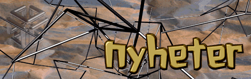
| Nyheter om produkter | Nyheter om strategiske samarbeid | Nyheter om standarder |
| 6. juni Jobber du med lyd eller musikk, kan Silicon Graphics tilby deg mange løsninger. | 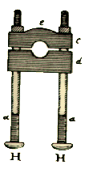 |
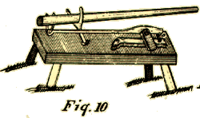 | 6. juni Få en opplevelse om hvordan Silicon Graphics Digital Media verktø kan hjelpe deg til å lage attraktive websider. |
| 9. mai Besøk den nye HotMix 10 siden. | 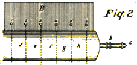 |
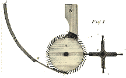 | 8. mai Interactive Digital Solutions lanserer det første ÅPNE utviklingsmiljø for å designe og levere interaktive multimedia tjenester over nettverk. |
| 3. mai Her kan du hente WebSpace (VRML). | 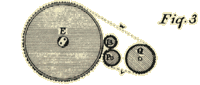 |
| Silicon Graphics tar ledelsen innen mid-range supercomputing. | |
| Bristol Myers Squibb velger Silicon Graphics Power Challenge til bruk innen forsknining for fremstilling av medisin. | |
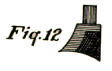 | 1. mai Besøk vår nye Club WebFORCE. |
MIPS og Silicon Graphics annonserer MIPS Media Carpet, en revelusjonerende nyhet innen markedet for interaktive forbrukerprodukter. | |
Verdens ledende firmaer innen forbrukerprodukter og kommunikasjon tar i bruk MIPS Media Carpet. | |
| 25. april Time Warner går inn i Interactive Digital Solutions som partner. | 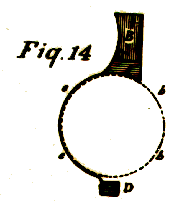 |
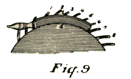 | 17. april MIPS og NEC annonserer avansert 64-bits RISC prosessor som er skreddersydd for interaktive forbrukerprodukter. |
| 11. april Skaff deg en 3D opplevelse gjennom Surf Zone. | 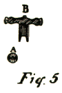 |
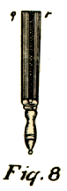 | 10. april Silicon Studio lanserer 3D Virtual Set teknologi. |
| 4. april Sjekk i on Visual Computing; en ny spennende site med mye kuult !!! | 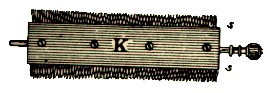 |
Iris On-Line er på Weben, en spennende opplevelse av multimedia. | |
| 3. april Sybase og Silicon Graphics annonserer et samarbeid for å utvikle databaseløsninger for WebFORCE. |
|
Silicon Graphics annonserer WebSpace, den første 3D vieweren (VRML). | |
| 28. mars Silicon Graphics annonserer at Adobe Photoshop og Adobe Illustrator bundles med i WebFORCE maskinvaren. | |

Oppdatert, 6. juni 1995